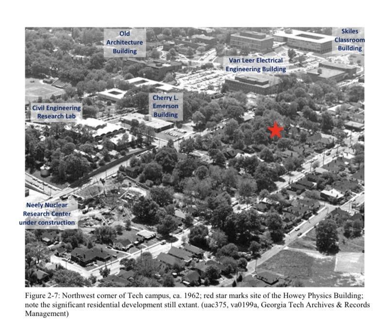
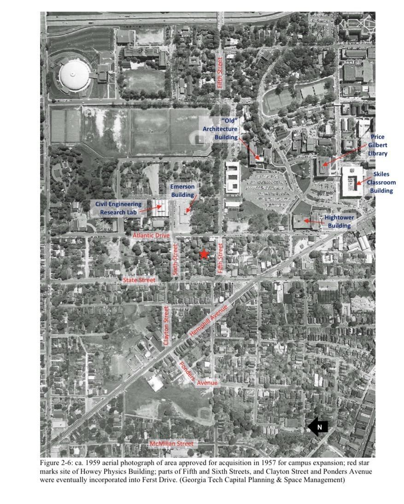
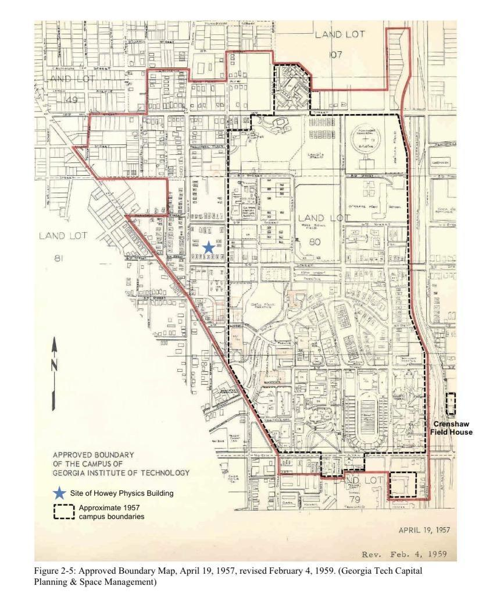
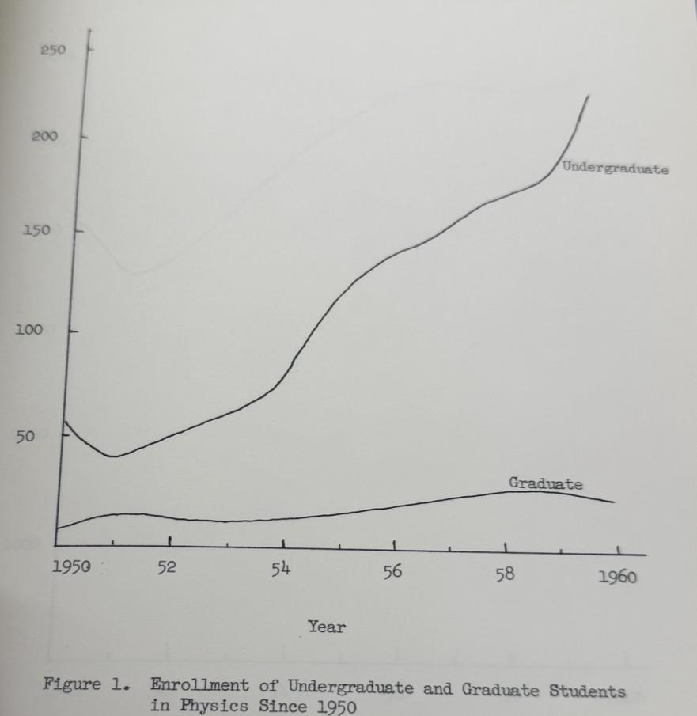

Why Georgia Tech needed to Expand its Physics Building:
During the 1950s, Georgia Tech experienced a large increase in student enrollment, which created a need for more classroom space and academic buildings. According to the 1960 proposal for a new Physics Building, Georgia Tech’s total enrollment grew from around 4,100 students in 1950 to over 6,000 by 1950 (Howey 10). The Physics Department was already struggling with overcrowded classrooms and limited laboratory space. In the proposal, the faculty stated, “At present we are seriously cramped for space for the 207, 208, 209 courses” (Howey 3). This shows that Georgia Tech needed to expand its facilities to keep up with the growing number of students.
To help solve these problems, Georgia Tech began planning a new Physics Building. The original 1960 proposal requested a building with 113,850 square feet of space for classrooms, laboratories, offices, and research facilities (Howey 1-2). According to the Historic Structures Report, construction began in 1965, and the building was completed in 1967 at a cost of $3.5 million (Grashof Design Studio 43). The new building included four large lecture theaters, additional classroom space, and a six-story research tower (Grashof Design Studio 43). This allowed Georgia Tech to provide more space for both teaching and scientific research.
The new building allowed Georgia Tech to support larger classes, advanced physics programs, and scientific research. This also showed how Georgia Tech was becoming a larger research university.




03
Howey Physics Building Now
Old Physics BuildingHowey Physics Building Now
04
Why this matters?
The new building allowed Georgia Tech to support larger classes, advanced physics programs, and scientific research. It represented more than a new building; it showed how Georgia Tech was becoming a larger research university.
Sources
Howey, J. H., and the Faculty of the School of Physics. Proposed New Physics Building for the Georgia Institute of Technology. Georgia Institute of Technology, Nov. 1960. Georgia Tech Archives.
Grashof Design Studio. Historic Structure Report: Joseph H. Howey Physics Building. Georgia Institute of Technology, June 2018.